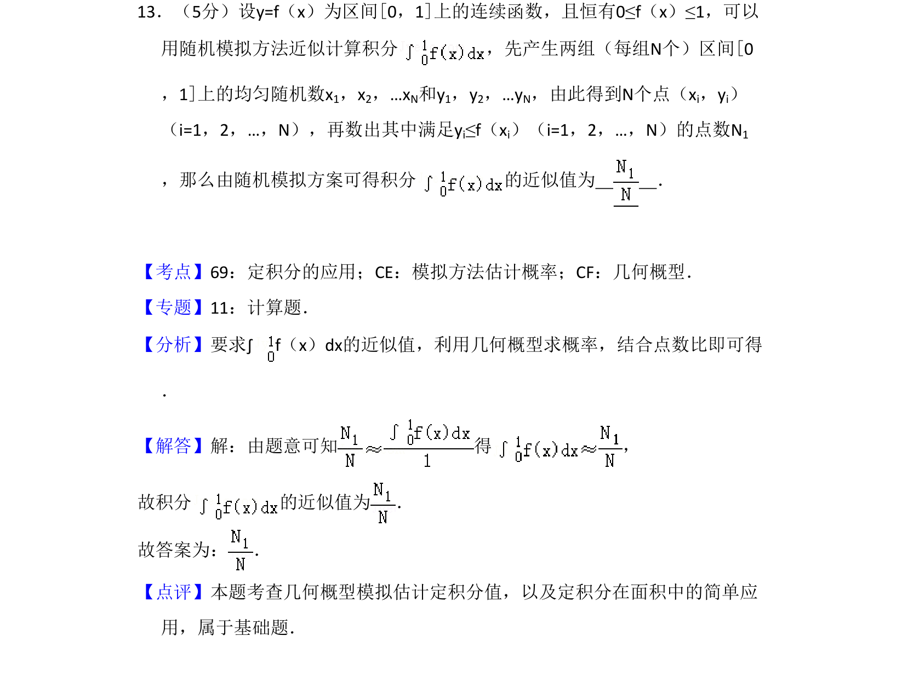
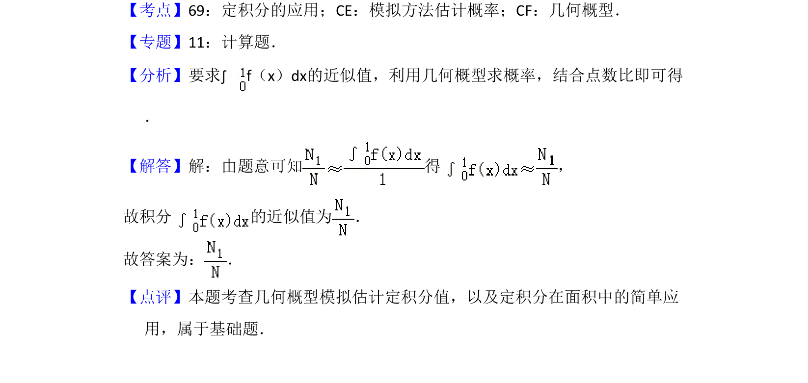

考点：定积分的应用 模拟方法估计概率 几何概型

本题通过随机模拟方法和几何概型近似计算定积分的值。

📄 原 PDF 第 10 页：
素材/真题/吉林/2008-2024·（吉林）数学高考真题/2010年高考数学试卷（理）（新课标）（解析卷）.pdf
13．（5分）设y=f（x）为区间[0，1]上的连续函数，且恒有0≤f（x）≤1，可以 用随机模拟方法近似计算积分 ，先产生两组（每组N个）区间[0 ，1]上的均匀随机数x1，x2，…xN和y1，y2，…yN，由此得到N个点（xi，yi） （i=1，2，…，N），再数出其中满足yi≤f（xi）（i=1，2，…，N）的点数N1 ，那么由随机模拟方案可得积分 的近似值为 ．
【考点】69：定积分的应用；CE：模拟方法估计概率；CF：几何概型．菁优网版权所有 【专题】11：计算题． 【分析】要求∫f（x）dx的近似值，利用几何概型求概率，结合点数比即可得 ． 【解答】解：由题意可知 得 ， 故积分 的近似值为 ． 故答案为： ． 【点评】本题考查几何概型模拟估计定积分值，以及定积分在面积中的简单应 用，属于基础题．